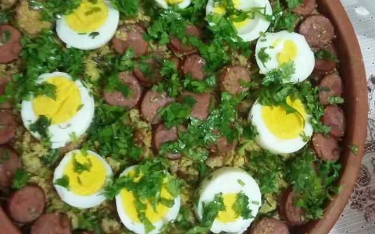

Feijão Tropeiro

Descrição:
Feijão tropeiro é um dos pratos queridinhos dos brasileiros!
Confira como é fácil fazer um feijão tropeiro saborosíssimo!
Ingredientes:
- 2 calabresas grandes picadinhas
- 200 g de bacon
- Feijão cozido na hora e coado na peneira
- Salsinha
- 1/2 cebola picadinha
- Tempero a gosto
- Farinha de mandioca
- 4 ovos fritos e picados
Modo de preparo:
- Em uma panela grande frite a calabresa e o bacon até ficarem douradinhos.
- Acrescente a cebola e frite mais um pouco.
- Frite os ovos em panela separada e pique - os.
- Coloque - os na panela e coloque a salsinha, sempre mexendo.
- Acrescente o feijão coado.
- Aos poucos, acrescente a farinha, para não deixar ficar seco.